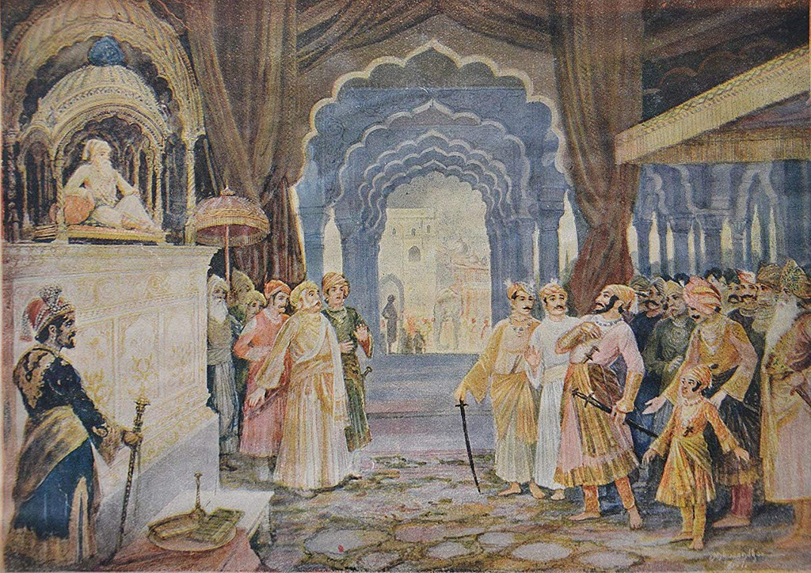

In 1666, Aurangzeb summoned Shivaji to Agra (though some sources instead state Delhi), along with his nine-year-old son Sambhaji. Aurangzeb's plan was to send Shivaji to Kandahar, now in Afghanistan, to consolidate the Mughal empire's northwestern frontier. However, in the court, on 12 May 1666, Aurangzeb made Shivaji stand behind mansabdārs (military commanders) of his court. Shivaji took offence and stormed out of court, and was promptly placed under house arrest under the watch of Faulad Khan, Kotwal of Agra. Shivaji's position under house arrest was perilous, as Aurangzeb's court debated whether to kill him or continue to employ him, and Shivaji used his dwindling funds to bribe courtiers to support his case. Orders came from the emperor to station Shivaji in Kabul, which Shivaji refused. Instead he asked for his forts to be returned and to serve the Mughals as a mansabdar; Aurangzeb rebutted that he must surrender his remaining forts before returning to Mughal service. Shivaji managed to escape from Agra, likely by bribing the guards, though the emperor was never able to ascertain how he escaped despite an investigation. Popular legend says that Shivaji smuggled himself and his son out of the house in large baskets, claimed to be sweets to be gifted to religious figures in the city.
